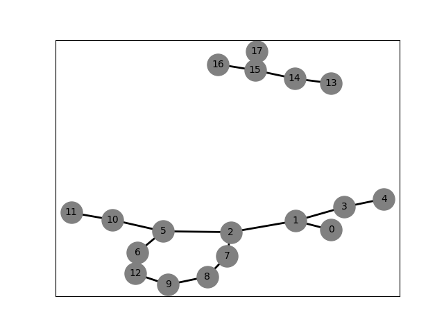
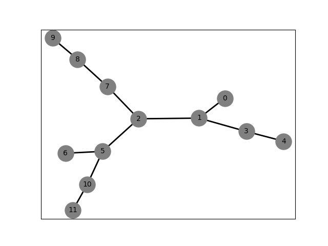
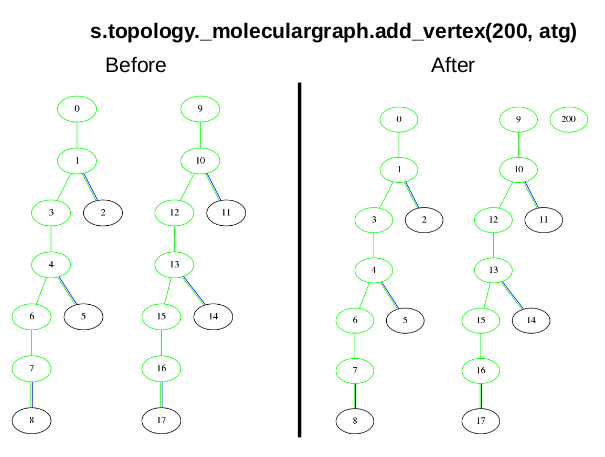
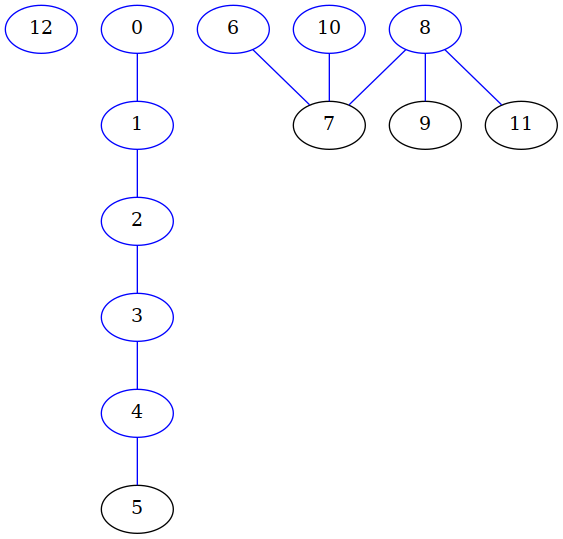
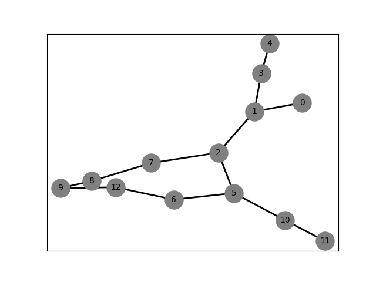
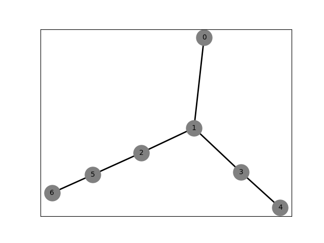
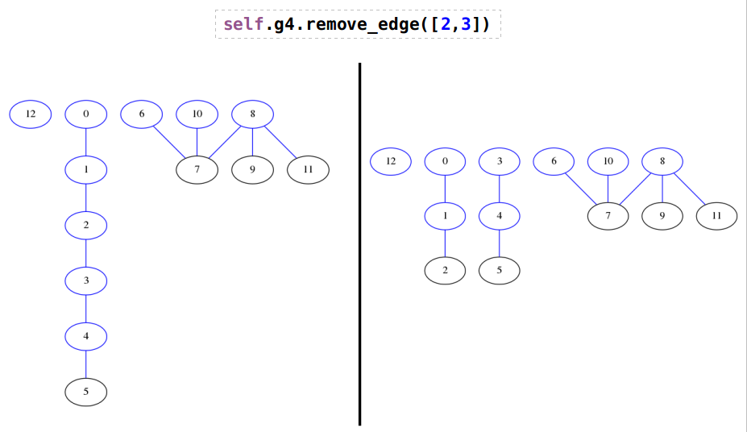

Molecular Graph¶
Overview¶
Molecular Graph object is used to represent a molecular structure
Example¶
Attributes¶
- _natoms: int
Number of atoms (= number of nodes in the graph).
- _nmols: int
Number of molecules (= number of non-conected graphs).
- _bonds: list of sets
Bonds of the molecule (edges of the graph) [{0,1},…{10,11}]
- _cycles: list
XXXXXX
- _graphdict: dict
Dictionary to represent the graph. Example: 0:[1,2] means that node 0 is linked to 1 and 2.
- _iatch: ndarray, np.shape(natoms,), type=int
Molecule (or chain) for each atom.
- _undirected: bool
Graph undirected or not.
Methods¶
API¶
-
class
chiripa.MolecularGraph.MolecularGraph(nvert=- 1, listbonds=None, undirected=True)[source]¶ -
__init__(nvert=- 1, listbonds=None, undirected=True)[source]¶ MolecularGraph implements objects that describe the connectivity of the atoms in a molecule or polymer chain. Each atom is a vertex and the edges of the graph represents a bond. The vertice numbering starts at zero
- Parameters
nvert (*) – Number of nodes (atoms) of the graph.
listbonds (*) – A list containing the edges (bonds) of the graph. The None value is used for a graph without edges.
undirected (*) – False for directed graph or True for undirected graph. (see warning above)
- Returns
None
-
\* ``self._graphdict`` - Type
-
\* ``self._nmols`` - Type
list of lists
-
\* ``self._bonds`` [{0,1},{1,2},{1,3}]
- Type
list of tuples
-
\* ``self._cycles`` [[5, 2, 7, 8, 9, 12, 6, 5]]
- Type
list of lists)–> A list of list. Each list is a ring (or cycle
-
\* ``self._undirected`` - Type
-
\* ``self._natoms`` - Type
int)–> Number of atoms aka number of get_vertices (nodes
-
\* ``self._iatch`` self._iatch[iat] = ich Atom iat is in the ich chain.
- Type
ndarray[natoms], integer
Examples:
An empty graph: >>> MolecularGraph()
A graph without get_edges, only nodes (10)
>>> MolecularGraph(nvert=10)
A graph with nodes and egdes
>>> MolecularGraph(nvert=2, listbonds=[[0,1], [1,2]])
A system with two molecules, with 13 and 5 atoms, respectively. The molecule #1 contains a cycle
Data:
self._graphdict = {0: [1], 1: [0, 2, 3], 2: [1, 5, 7], 3: [1, 4], 4: [3], 5: [2, 6, 10], 6: [5, 12], 7: [2, 8], 8: [7, 9], 9: [8, 12], 10: [5, 11], 11: [10], 12: [9, 6], 13: [14], 14: [13, 15], 15: [14, 17, 16], 16: [15], 17: [15]} self._bonds = [{0, 1}, {1, 2}, {1, 3}, {2, 5}, {3, 4}, {5, 6}, {10, 5}, {2, 7}, {8, 7}, {8, 9}, {10, 11}, {9, 12}, {12, 6}, {13, 14}, {14, 15}, {17, 15}, {16, 15}] self._natoms = 18 self._undirected = True self._cycles = [[5, 2, 7, 8, 9, 12, 6, 5]] self._nmols = [[0, 1, 2, 3, 4, 5, 6, 7, 8, 9, 10, 11, 12], [13, 14, 15, 16, 17]]
Notes
Difference between undirected (undirected = True) and directed (undirected = False)
Data
TEST 05 Undirected: {0: [1], 1: [0, 2, 3], 2: [1, 5, 7], 3: [1, 4], 4: [3], 5: [2, 6, 10], 6: [5], 7: [2, 8], 8: [7, 9], 9: [8], 10: [5, 11], 11: [10]} TEST 05 Directed: {0: [1], 1: [2, 3], 2: [5, 7], 3: [4], 4: [], 5: [6], 6: [], 7: [], 8: [7, 9], 9: [], 10: [5, 11], 11: []}
Warning
Directed graphs should not work properly. The most methods work well with undirected graphs
-
add_edge(edge, setforest=True)[source]¶ It creates a new edge in the graph between two existing nodes. The type of parameter edge can be a set, a tuple or a list of two nodes; Multiple edges can exist between two vertices Both vertex must exist in the molecular graph. If any vertex is not in the molecular graph nothing is done.

- Parameters
edge (set, tuple or list) – The vertice numbers to create an edge (aka bond)
setforest (boolean, default=True) – If True the _set_forest method is called. This is useful when multiple edges are added to a graph, in this case only in the last addition the parameter setforest should be true in order to update the self._nmols attribute (see the example)
- Returns
None
Example
Adding an edge between the vertex 12 and 13 in a molecular graph called a >>> g.add_edge([12,13])
Adding multiple edges >>> g.add_edge((1,7), setforest=False) … g.add_edge((2, 8), setforest=False) … g.add_edge((9, 8), setforest=True)
-
add_vertex(vertex)[source]¶ This function add a vertex to the molecular graph. The new vertex is not bonded to any other in the graph. If the vertex exists in the self._graphdict attribute nothing has to be done.
- Parameters
vertex (int) – Index of the vertex.
- Returns
None
Example
Add a vertex to a graph
>>> g.add_vertex(200)
-
bfs_iterative(start=0)[source]¶ Breath-First Search. Iterative version (BFS: https://en.wikipedia.org/wiki/Breath-first_search)
- Parameters
start (integer) – Node to start the search
- Returns
Return a list with the BFS path
Example
BFS in a graph
>>> g.bfs_iterative(start=6)
Data:
[6, 7, 8, 10, 9, 11]
-
dfs_iterative(start=0)[source]¶ Depth-First Search. Iterative version (DFS: https://en.wikipedia.org/wiki/Depth-first_search)
- Parameters
start (integer) – Node to start the search
- Returns
Return a list with the DFS path
Example
DFS in a graph
>>> g.dfs_iterative(start=6)
Data:
[6, 7, 8, 9, 11, 10]
-
draw_graph_forest_networkx(title='simple')[source]¶ Create an image for each tree of the graph using networkx library. It can be useful to create a file for each molecule in the system.
- Parameters
title (string) – The patter to be used in the name of the file containing the image
- Returns
None
Example
Draw the each subgraph of the graph g4 in a file with the pattern graphs/graph04_f???.png
>>> g4.draw_graph_forest_networkx(title="graphs/graph04_f")
-
draw_graph_forest_pygraphviz(title='simple')[source]¶ Create an image for each tree of the graph using pygraphviz library. It can be useful to create a file for each molecule in the system.
- Parameters
title (string) – The patter to be used in the name of the file containing the image
- Returns
None
Example
Draw the each subgraph of the graph g4 in a file with the pattern graphs/graph04_f???.png
>>> g4.draw_graph_forest_pygraphviz(title="graphs/graph04_f")
-
draw_graph_networkx(title='simple')[source]¶ Create an image of the graph using networkx library
- Parameters
title (string) – The name of the file containing the image
- Returns
None
Example
Draw the graph g4 in a file named graphs/graph04_f.png
>>> g4.draw_graph_networkx(title="graphs/graph04")
-
draw_graph_pygraphviz(title='simple')[source]¶ Create an image of the graph using pygraphviz library
- Parameters
title (string) – The name of the file containing the image
- Returns
None
Example
Draw the graph g4 in a file named graphs/graph04.png
>>> g4.draw_graph_pygraphviz(title="graphs/graph04")
-
find_all_paths(start_vertex, end_vertex, path=[])[source]¶ - It finds all paths from start_vertex to
end_vertex in graph, This is a recursive function.
- Parameters
start_vertex (integer) – Starting vertex of the path
end_vertex (integer) – Finish vertex of the path
path (list of lists) – Paths between start_vertex and end_vertex
- Returns
Return a list of paths. If there is not path between start_vertex and end_vertex returns an empty list. The
starting and ending node are included in the path
Example
Find all paths between the node 2 and 12 of the following graph:
>>> path = self.g3.find_all_paths(2,12) ... [[2, 5, 6, 12], [2, 7, 8, 9, 12]]
Warning
This is a recursive function
-
find_all_paths_length(start_vertex, length, path=[])[source]¶ It finds all paths of length
lengthin graph from start_vertex. This is a recursive function- Parameters
start_vertex (integer) – Starting vertex of the path
length (integer) – Length of the paths to find. This is defined as the number of edges between the start_vertex and the end_vertex
path (list) – Path between start_vertex and end_vertex
- Returns
Return a list of paths of length ``length``. If length is greater than the max. length in the graph returns
an empty list. If length is zero returns a list only containing the start_vertex node.
If there is not path between start_vertex and end_vertex returns an empty list. The
starting node is included in the path
Example
Find all paths between the starting in the node 2 with length 4 of the following graph:
Warning
This is a recursive function
-
find_isolated_vertices()[source]¶ It returns a list of isolated vertices. A isolated vertex is defined as a vertex without edges
- Parameters
None –
- Returns
Return a list of isolated nodes
Example

>>> self.g4.find_isolated_vertices() ... [12]
-
find_path(start_vertex, end_vertex, path=[])[source]¶ Find a path from start_vertex to end_vertex in graph
A path is returned.
Parameters:start_vertex (type: integer) –>
end_vertex (type: integer) –>
path (type: list) –> Path between start_vertex and end_vertex
Return:A list of edges.
Warning
Do not use this function, instead of use find_all_paths
Warning
This is a recursive function
-
get_allbends()[source]¶ It returns all angle bends in the graph.
- Parameters
None –
- Returns
A list containing all bend angles
Example
All bend angles in the system
>>> al1 = self.g7.get_allbends() ... self.assertEqual(al1,[[0, 1, 2], [0, 1, 3], [1, 2, 5], [1, 2, 7], ... [1, 3, 4], [2, 1, 3], [2, 5, 6], [2, 5, 10], ... [2, 7, 8], [5, 2, 7], [5, 6, 12], [5, 10, 11], ... [6, 5, 10], [6, 12, 9], [7, 8, 9], [8, 9, 12], ... [13, 14, 15], [14, 15, 17], [14, 15, 16], [16, 15, 17]])
-
get_allbonds()[source]¶ It returns all bonds in the graph.
- Parameters
None –
- Returns
A list containing all bond angles
Example
All bond angles in the system. The order is [min, max]
>>> bl1 = self.g7.get_allbonds() ... self.assertEqual(bl1,[[0, 1], [1, 2], [1, 3], [2, 5], [2, 7], [3, 4], ... [5, 6], [5, 10], [6, 12], [7, 8], [8, 9], [9, 12], ... [10, 11], [13, 14], [14, 15], [15, 17], [15, 16]])
-
get_alldihedrals()[source]¶ It returns all dihedral angles in the graph.
- Parameters
None –
- Returns
A list containing all dihedral angles. In this implementation, the greater atom number is the first atom in the list
Example
All dihedral angles in the system
>>> d1 = g7.get_alldihedrals() ... self.assertEqual(d1,[[5, 2, 1, 0], [7, 2, 1, 0], [4, 3, 1, 0], [6, 5, 2, 1], ... [10, 5, 2, 1], [8, 7, 2, 1], [4, 3, 1, 2], [12, 6, 5, 2], ... [11, 10, 5, 2], [9, 8, 7, 2], [5, 2, 1, 3], [7, 2, 1, 3], ... [8, 7, 2, 5], [9, 12, 6, 5], [7, 2, 5, 6], [11, 10, 5, 6], ... [8, 9, 12, 6], [10, 5, 2, 7], [12, 9, 8, 7], [12, 6, 5, 10], ... [17, 15, 14, 13], [16, 15, 14, 13]])
-
get_allimpropers(isbackbone_dict)[source]¶ It returns all improper angles in the graph.
- Parameters
isbackbone_dict (Dictionary) – The key is the number of the atom and the value True (backbone atom) or False (not backbone atom)
- Returns
A list containing all improper angles. In this implementation, the greater atom number is the first atom in the list
Example
All improper angles in the system
>>> isbackbone_dict = {} ... for i in range(0,self.g7._natoms): ... isbackbone_dict[i] = True ... isbackbone_dict[2] = False ... isbackbone_dict[5] = False ... isbackbone_dict[6] = False ... isbackbone_dict[7] = False ... isbackbone_dict[8] = False ... isbackbone_dict[9] = False ... isbackbone_dict[10] = False ... isbackbone_dict[11] = False ... isbackbone_dict[12] = False ... isbackbone_dict[16] = False ... d1 = self.g7.get_allimpropers(isbackbone_dict=isbackbone_dict) ... self.assertEqual(d1,[[1, 0, 3, 2], [2, 5, 7, 1], [15, 14, 17, 16]])
Warning
A criteria about the order of atoms need to be implemented and checked
-
get_edges()[source]¶ It returns a list of all edges in the graph
- Parameters
None –
- Returns
A list containing all edges
Example
All edges in the system. The order is [min, max]
>>> e = self.g11.get_edges() ... el = [{0, 1}, {1, 2}, {1, 3}, {2, 5}, {3, 4}, {5, 6}] ... self.assertEqual(e, el)
-
get_forest()[source]¶ It returns a list of lists. Each sublist is a molecule (chain) of the system
- Parameters
None –
- Returns
A list of lists (forest => [[ichain1], [ichain2], …])
Examples
>>> l2 = self.g4.get_forest() ... lr = [[0, 1, 2, 3, 4, 5], [6, 7, 8, 9, 11, 10], [12]] #= self._nmols
-
get_graph()[source]¶ It returns the attribute self._graphdict
- Parameters
None –
- Returns
It returns the attribute self._graphdict
Example
>>> g11.get_graph() ... {0: [1], 1: [2, 3], 2: [5], 3: [4], 4: [], 5: [6], 6: []}
-
get_neighbours(inode)[source]¶ This method returns all neighbours
- Parameters
: (inode) – integer: Number of the parent node
- Returns
It returns a list with all neighbors to the inode.
Examples
>>> ln = self.g3.get_neighbours(2) ... self.assertEqual(ln, [1, 5, 7])
-
get_vertices()[source]¶ Returns a list of all vertices in the graph
- Parameters
None –
- Returns
A list of vertices
Example
——- – >>> v = self.g11.get_vertices() … [0, 1, 2, 3, 4, 5, 6]
-
is_connected(vertices_encountered={}, start_vertex=None)[source]¶ Determines if the graph is connected. This is a recursive function
- Parameters
vertices_encountered (set) – Returns a set of vertices connected
integer (start_vertex) – Startting point
- Returns
Return a boolean. True if the graph is connected
.. warning:: This is a recursive function
Example
>>> g1.is_connected()
-
iscyclic()[source]¶ Returns a boolean list. Each item of the list corresponds to a graph (molecule)
- Parameters
None –
- Returns
A boolean list
Example
>>> iscyclic2 = self.g7.iscyclic() ... self.assertEqual(iscyclic2, [True, False])
-
perception_rings()[source]¶ “A New Algorithm for Exhaustive Ring Perception in a Molecular Graph” Th. Hanser, Ph. Jauffret, and G. Kaufmann J. Chem. Inf. Comput. Sci. 1996, 36, 1146-1152 https://doi.org/10.1021/ci960322f
Abstract: A new fast and easy to implement algorithm for exhaustive ring perception is presented. This algorithm is based upon a progressive reduction (collapsing) of the path graph associated with the molecular graph studied. The path graph is an image of the molecular graph in which each vertex corresponds to a vertex of the molecular graph and each edge a-b describes an existing path between a and b in the molecular graph. During the reduction, nodes of the path graph are removed, and the information related to cycle occurrence is concentrated in the label of new get_edges between the remaining get_vertices. Each loop formed in the path graph during this collapsing process corresponds to a cycle in the molecular graph. Once the path graph has totally collapsed, all the rings in the molecular graph have been perceived.
Returns
-
remove_edge(edge)[source]¶ It deletes an edge in the graph between two existing nodes. The parameter edge can be a set, a tuple or a list of two nodes; Between two vertices can be multiple edges.
Both vertex must exist in the molecular graph. If any vertex is not in the molecular graph nothing is done
Examples
>>>g4.remove_edge([2,3])

-